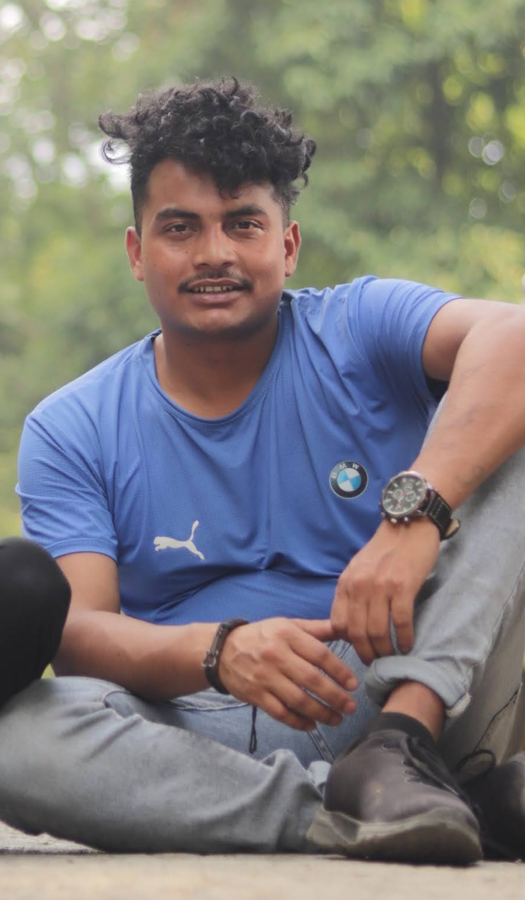

It's been more than 6 years that I am staying at Saathiko Ghar Boys Hostel, Dilibazaar Kathmandu. This is the first experience of my hostel life. I heard about the strict rules and regulations of hostels before. There was a mixed feeling of excitement, fear, and nervousness in the first of my hostel. Sharing a room with a stranger was an awkward experience at first. But, slowly I used to be friendly with the hostel environment, and residents. Personally, I feel a homely environment here now. The friendly behaviors of the owners, hostel warden, and staff are another beauty of this hostel. They respond to the residents calmly. I found the sanitation and hygiene over here. There are residents from different parts of the country and that helps to understand and share the different cultures, religions, and values. I use to enjoy the food as it is hygienic. Celebrating the different occasions is also another beauty of this hostel. So, for me, Saathko Ghar Boys hostel is the best place to live and learn.
It's been more than 3 years that I am staying at Saathiko Ghar Boys Hostel, Dilibazaar Kathmandu. This is the first experience of my hostel life. I heard about the strict rules and regulations of hostels before. There was a mixed feeling of excitement, fear, and nervousness in the first of my hostel. Sharing a room with a stranger was an awkward experience at first. But, slowly I used to be friendly with the hostel environment, and residents. Personally, I feel a homely environment here now. The friendly behaviors of the owners, hostel warden, and staff are another beauty of this hostel. They respond to the residents calmly. I found the sanitation and hygiene over here. There are residents from different parts of the country and that helps to understand and share the different cultures, religions, and values. I use to enjoy the food as it is hygienic. Celebrating the different occasions is also another beauty of this hostel. So, for me, Saathko Ghar Boys hostel is the best place to live and learn.
It's been more than 3 years that I am staying at Saathiko Ghar Boys Hostel, Dilibazaar Kathmandu. This is the first experience of my hostel life. I heard about the strict rules and regulations of hostels before. There was a mixed feeling of excitement, fear, and nervousness in the first of my hostel. Sharing a room with a stranger was an awkward experience at first. But, slowly I used to be friendly with the hostel environment, and residents. Personally, I feel a homely environment here now. The friendly behaviors of the owners, hostel warden, and staff are another beauty of this hostel. They respond to the residents calmly. I found the sanitation and hygiene over here. There are residents from different parts of the country and that helps to understand and share the different cultures, religions, and values. I use to enjoy the food as it is hygienic. Celebrating the different occasions is also another beauty of this hostel. So, for me, Saathko Ghar Boys hostel is the best place to live and learn.